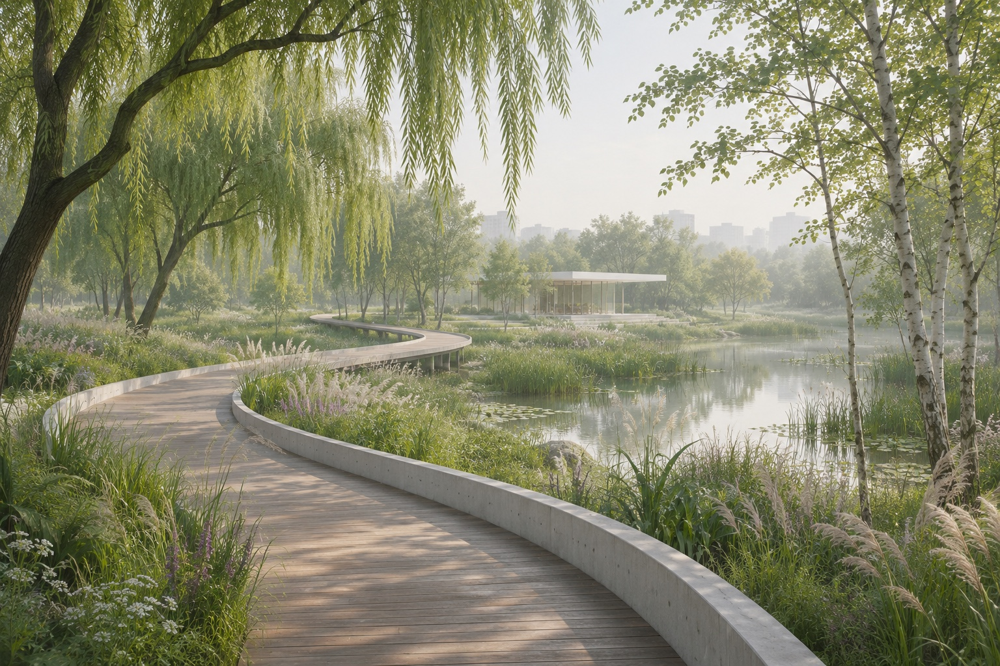

让水岸重新呼吸，让城市温柔靠近。
REVERIE
LANDSCAPE ARCHITECTURE / 2026
你好，我是林知夏，一名风景园林专业学生。
我关注城市与自然的连接，也在意每一个
让人愿意停下来的小小空间。

SELECTED WORKS
从生态系统到日常生活，
用设计回应不同尺度的场地。
显示全部 3 个作品
让水岸重新呼吸，让城市温柔靠近。
在熟悉的街巷，留一处相遇的地方。
让季节留下痕迹，让生长成为风景。
作品说明：以上为虚构概念项目，效果图由 AI 生成，用于展示网站的作品集呈现方式。
A LITTLE ABOUT ME
我是林知夏，正在学习用风景园林的语言，
回应人与环境之间的关系。
我喜欢走路、观察植物，也习惯用速写记录城市里的细节。在设计中，我从场地调研出发，把生态过程、空间体验与日常使用放在一起思考。
期待加入关注公共空间与可持续景观的团队，在真实项目中学习，也为团队贡献认真、细致的工作。
HOW I WORK
愿意观察，也乐于动手。
在每一次推敲中，让设计更靠近生活。
踏勘记录、行为观察与场地梳理，从真实问题出发建立设计依据。
用草图与三维模型往返验证尺度、流线和人与空间的关系。
以清晰的图面和叙事呈现方案，主动沟通、整理反馈并迭代。
技能与学习经历为虚构人物设定。
LET’S GROW SOMETHING TOGETHER
开放实习机会 · 示例如果你的团队也相信景观可以让生活更好，
很期待与你聊聊。